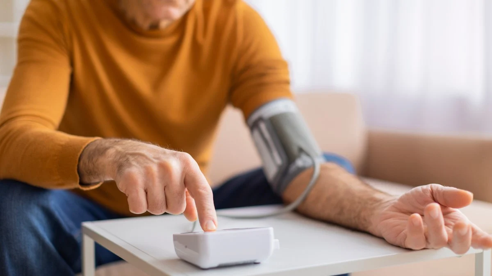

Saúde Mental - 20/11/2024
Saúde Mental - 20/11/2024
Debate sobre uso de telas por crianças e adolescentes se intensifica e inclui educação e políticas públicas
Saúde Mental - 27/11/2024
Era da hiperconectividade levanta novos desafios para a saúde mental da população
 Saúde Mental - 14/10/2024
Saúde Mental - 14/10/2024
A saúde mental da geração Z - Futuro Explica
 Saúde - 02/04/2025
Saúde - 02/04/2025
Como a saúde global pode se recuperar diante do recuo dos Estados Unidos da OMS
.webp) Saúde - 05/03/2025
Saúde - 05/03/2025
Primeiro biossimilar de insulina de ação rápida é aprovado pelo FDA
Longevidade - 17/01/2025
Autocuidado é aposta de centro de pesquisa do Imperial College de Londres pioneiro no estudo do tema
Longevidade - 11/09/2024
Escassez de geriatras desafia sistemas de saúde em um mundo que envelhece

Longevidade - 10/09/2024
Por que as doenças crônicas são uma preocupação para a saúde pública? – Futuro Explica Edição Especi